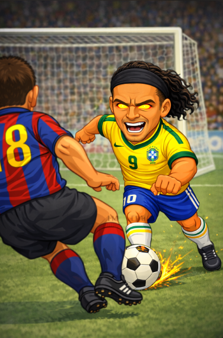

Ronaldinho: la sonrisa que hizo mágico al fútbol
Inicios
Ronaldo de Assis Moreira, conocido mundialmente como Ronaldinho, nació en Porto Alegre, Brasil. Desde niño destacó por su talento natural, creatividad y alegría con el balón. Creció en un entorno futbolero que impulsó su estilo libre y su capacidad para sorprender dentro del campo.
Trayectoria en clubes
- Grêmio: El club donde inició su carrera profesional y comenzó a mostrar su talento al mundo.
- Paris Saint-Germain: Su primera experiencia en Europa, donde consolidó su fama internacional.
- FC Barcelona: La etapa más brillante de su carrera, convirtiéndose en ídolo y referente del club.
- AC Milan: Continuó su legado en Europa, sumando títulos y experiencia.
Logros y reconocimientos
Ronaldinho fue uno de los futbolistas más premiados de su generación:
- Balón de Oro en 2005
- Campeón del Mundo con Brasil en 2002
- 2 veces FIFA World Player
- Champions League con el FC Barcelona
Sus logros reflejan una carrera marcada por el talento, la creatividad y el espectáculo.
Impacto cultural
Ronaldinho trascendió el fútbol. Su carisma, sonrisa permanente y estilo de juego alegre lo convirtieron en un ícono global, inspirando a millones de niños y jóvenes a disfrutar el fútbol como una forma de arte.
Estilo de juego
Magia pura. Regates imposibles, pases sin mirar, controles perfectos y una creatividad inigualable definieron a Ronaldinho. Fue un jugador que priorizó la diversión, convirtiendo cada partido en un espectáculo inolvidable.